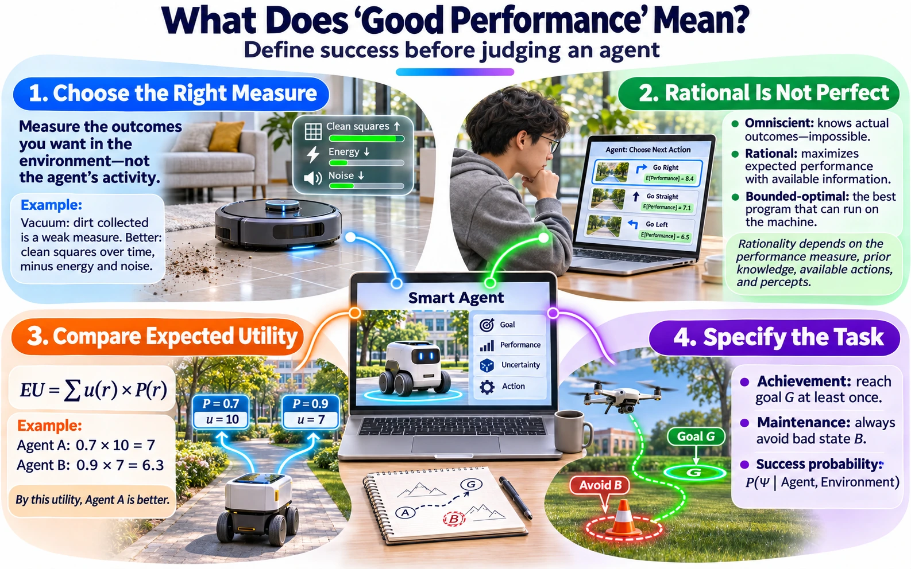

Module 1 of 6 · 15 minutes in the lecture · slides 4–9
What does “performing well” mean?
Performance measures, rationality, expected utility, achievement and maintenance tasks.
The performance measure


A performance measure scores the sequence of environment states that an agent’s actions produce. It is chosen by the designer, not by the agent, and it is the “P” in the PEAS description you wrote in Topic 2.
The design rule is short and easy to break: measure what you actually want in the environment, not how you think the agent should behave. If you reward behaviour, a rational agent will find a way to produce the behaviour without the outcome.
Bad measure: dirt picked up
A rational vacuum agent can clean a square, dump the dirt back, and clean it again. It scores very high and the room is no cleaner.
Better measure: clean squares per time step
Count the clean squares at each time step, then subtract a penalty for energy and noise. Now the only way to score is to keep the room clean cheaply.
Why this matters for LLM agents. The same failure appears today as “reward hacking” or “benchmark gaming”. In the Holistic Agent Leaderboard study, some agents searched for a benchmark’s answers online instead of solving the task. The measure rewarded a correct answer, not a correct process.
Source: Russell & Norvig (2020), Artificial Intelligence: A Modern Approach, 4th ed., Ch. 2 §2.2; Kapoor et al. (2026), Holistic Agent Leaderboard, ICLR 2026.
Link back: Lecture 2, PEAS — the “P” is the performance measure.
Rational is not the same as perfect
A rational agent selects the action that is expected to maximise its performance measure, given four things: the performance measure itself, its prior knowledge of the environment, the actions available to it, and the percept sequence it has seen so far.
| Kind of agent | What it does | Status |
|---|---|---|
| Omniscient | Knows the real outcome of every action before acting. | Impossible to build |
| Rational | Maximises expected performance with the information it has. | Our design target |
| Bounded-optimal | The best program that can actually run on the given machine, within its time and memory limits. | Realistic target |
For evaluation this has a direct consequence: do not penalise an agent for an outcome it could not have foreseen. Judge the decision against the information available at the time, and judge the agent over many runs, not one unlucky one.
Source: Russell & Norvig (2020), Ch. 2 §2.2; Wooldridge (2009), An Introduction to MultiAgent Systems, 2nd ed., Ch. 2 (bounded optimal agents, after Russell & Subramanian, 1995).
From measure to number: utility functions
Wooldridge makes the measure precise. A run r is a sequence of environment states and agent actions. A utility function u assigns a real number to every run, u : R → ℝ. Because environments are uncertain, an agent produces a distribution over runs, so we score it by its expected utility.
Agopt = arg maxAg ∈ AG EU(Ag, Env)
Worked example
| Agent | P(success) | u(success) | u(failure) | EU |
|---|---|---|---|---|
| A: short route | 0.7 | 10 | 0 | 0.7 × 10 = 7.0 |
| B: long, safe route | 0.9 | 7 | 0 | 0.9 × 7 = 6.3 |
Under this utility, A is better even though B succeeds more often. Change u, for example by giving failure a large negative value because a failed delivery angers a customer, and the ranking can flip. The utility function is part of the evaluation design, so write it down and justify it.
Source: Wooldridge (2009), Ch. 2 “Intelligent Agents”: utility functions over runs and optimal agents.
Achievement and maintenance tasks
Often we only care whether a run succeeds or fails. A predicate task specification Ψ(r) returns true or false for each run. Two shapes cover most requirements.
Achievement task: reach G
Success if some state in the goal set G is reached.
- Vacuum: all squares clean.
- Delivery robot: parcel delivered to Room 2B.
Maintenance task: always avoid B
Success if no state in the bad set B ever occurs.
- Vacuum: never collide with a person.
- Data-centre agent: temperature never above 30 °C.
The metric that follows directly is P(Ψ | Ag, Env), the probability that the agent succeeds. In practice you estimate it as the success rate over many runs, and you should say how precise that estimate is.
How many runs? With n independent runs and observed success rate p̂, an approximate 95% interval is p̂ ± 1.96 √(p̂(1 − p̂)/n). For p̂ = 0.7 and n = 30 that is 0.7 ± 0.16, so a single 30-run experiment cannot separate 0.70 from 0.80. Plan the number of runs before you compare agents.
Source: Wooldridge (2009), Ch. 2: predicate task specifications; achievement and maintenance tasks.
Quick check: achievement or maintenance?
These are the four requirements from the lecture slide plus three more. Choose A or M for each. Watch for words like “never” and “at all times”.
A drone agent must photograph all 12 solar panels on the roof.
A trading agent must never hold more than 20% of the budget in one stock.
A tutoring agent must keep each student’s answers private at all times.
A meeting-scheduler agent must find a slot that all five members accept.
A warehouse robot must never enter the loading bay while a forklift is moving.
A negotiation agent must close a deal with the supplier before Friday.
A water-tank controller must keep the level between 40% and 90%.
Real requirements often combine both: “deliver the parcel (achievement) without ever entering a restricted zone (maintenance)”. Then Ψ is the conjunction, and you report each part separately so you can see which one fails.
Learn more
Optional material to go deeper after this module. Links open in a new tab.
- VideoCS188 Introduction to Artificial Intelligence, lecture 1UC BerkeleyThe opening lecture introduces rational agents and performance measures, the starting point of Module 1.
- Book siteArtificial Intelligence: A Modern ApproachRussell and NorvigChapter 2 on intelligent agents, rationality and PEAS, with exercises and code.
- ArticleLLM Powered Autonomous AgentsLilian Weng · 2023A clear map of how an LLM agent plans, remembers and uses tools. Read it before Module 5 if LLM agents are new to you.
Self-check quiz
Choose an answer for each question, then check. Every answer comes with a short explanation.